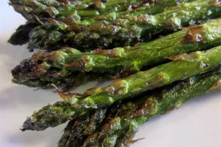

Grilled Asparagus

How to make delicious grilled asparagus
Grilled asparagus is simple to make, but it lets you enjoy the natural flavor of your veggies. Fresh asparagus spears are coated with a bit of oil, salt, and pepper and cooked quickly over high heat on the grill. That's it!
Ingredients
- A pound of fresh, clean, trimmed asparagus
- Olive oil to keep the asparagus from drying out and gives the seasonings something to stick to.
- Salt and pepper for seasoning
Steps
- Toss the asparagus with olive oil, season, and grill until lightly charred.